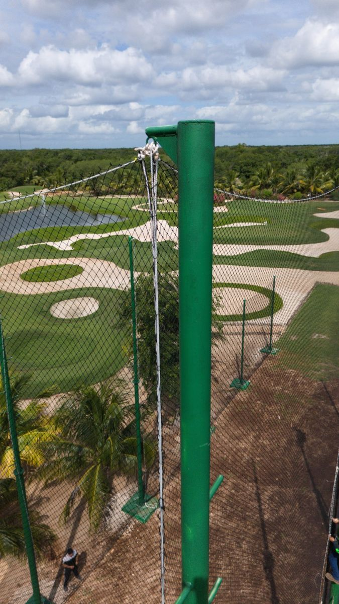
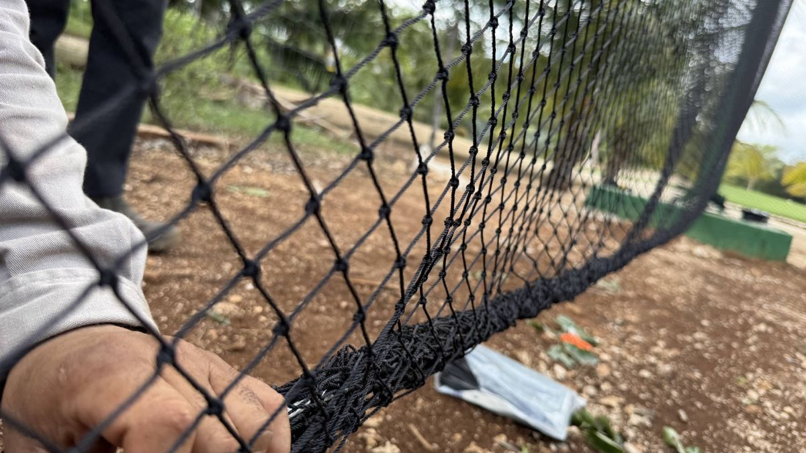
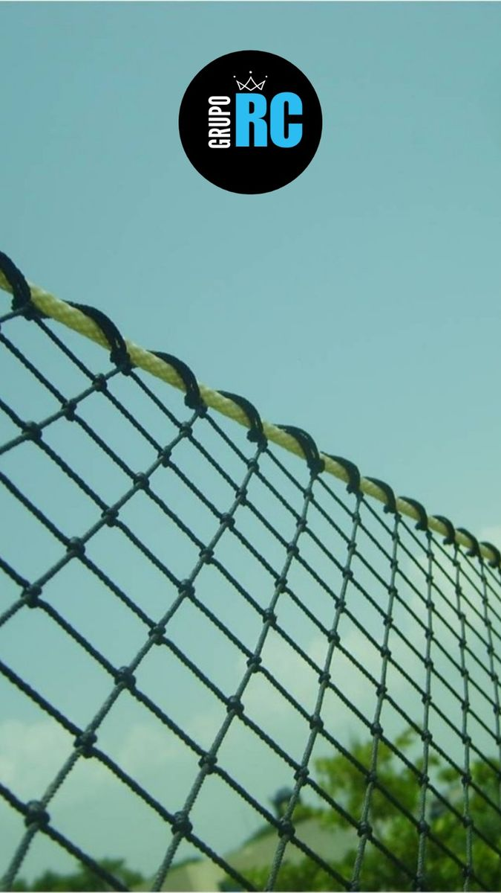

Para instalar una red perimetral romboidal, el orden de colocación importa. Una de las recomendaciones que más repito es esta: primero fija las esquinas superiores y distribuye el paño; después súbelo a los postes intermedios.
¿Por qué? Porque la red puede desplazarse sobre las piolas de su contorno. Si comienzas fijándola en el centro, puedes dificultar su distribución y terminar con zonas amontonadas, desniveles o partes colgadas.
En esta guía explico el procedimiento de nuestro manual de instalación, utilizando como ejemplo una red de diez metros de largo por seis metros de alto, con tres postes separados cinco metros entre sí.
Antes de comenzar
Los postes, sus cimentaciones y los puntos de sujeción deben estar preparados y revisados. Si aún no llegas a ese punto, revisa qué preparar antes de instalar una red perimetral.
En nuestro sistema, cada poste lleva dos argollas abiertas: una arriba y otra abajo. No colocamos argollas a media altura. Cuando hablamos de un “poste intermedio”, nos referimos al poste ubicado entre los extremos, que también tiene su argolla superior e inferior.
La red cuenta con cuatro piolas en el contorno: una superior, una inferior y dos laterales. Estas piolas permiten sujetar y acomodar el paño.
Antes de elevarlo, confirma que los accesorios no tengan rebabas o bordes cortantes y que el equipo de acceso sea adecuado para la altura y el terreno. El montaje en altura debe realizarse con personal capacitado y las medidas de protección correspondientes.
Paso 1. Extiende completamente la red en el piso
Despliega el paño sobre una superficie limpia y libre de objetos que puedan engancharlo.
Identifica las cuatro piolas, las esquinas y la orientación de la red. Extiéndela para reconocer su forma y distribuir el tejido antes de comenzar a sujetarlo.
Durante el transporte, la malla puede recorrerse sobre la piola y acumularse hacia un lado. Suelo compararlo con una cortina de baño: el soporte conserva su longitud, pero la cortina puede quedar amontonada en un extremo.
Por eso, una red desacomodada no necesariamente está mal confeccionada. Primero hay que desplegarla y repartirla. No empieces a amarrar el paño mientras siga enrollado o amontonado.
Paso 2. Amarra la primera esquina superior
Identifica la piola que corresponde al borde superior.
Sujeta una de sus esquinas a la argolla superior del primer poste. En esta etapa utiliza un amarre que permita hacer ajustes y que puedas deshacer de forma controlada.
Todavía necesitarás acomodar la tensión y distribuir la malla, así que evita cerrar el montaje como si ya fuera el ajuste final.
Paso 3. Lleva la misma piola a la esquina opuesta
Lleva el borde superior hasta el último poste y sujeta la segunda esquina a su argolla superior.
En nuestro ejemplo, la red va del primer poste al tercero. El poste central todavía no se utiliza para levantar el paño. No amarres primero en el poste intermedio.
La intención es establecer los dos extremos del borde superior antes de repartir la red y apoyarla en el centro.
Paso 4. Ajusta la piola superior y distribuye la malla
Con ambos extremos presentados, reajusta una esquina de forma controlada: afloja el amarre cuando sea necesario, acomoda la piola y vuelve a asegurarla. Durante los ajustes, mantén el paño bajo control y el área inferior despejada.
Después distribuye el tejido desplazándolo sobre la piola, como una cortina, hasta que quede repartido entre los extremos.
Revisa que no haya rombos acumulados en una zona y demasiado abiertos en otra. La tensión de la piola y la distribución del tejido son ajustes relacionados, pero diferentes.
No busques corregir todo tirando con más fuerza. Primero comprueba que el paño esté bien acomodado.

Paso 5. Sube el borde superior al poste intermedio
Una vez distribuida la red, coloca la piola superior en la argolla de arriba del poste central.
Si hay varios postes intermedios, presenta el borde superior en sus respectivos apoyos y revisa nuevamente la distribución.
Después de levantarlo, puede ser necesario reajustar una esquina. Hazlo de forma gradual para que el borde quede bien asentado y conserve una caída controlada entre apoyos.
El orden es: esquina superior → esquina superior opuesta → distribuir → subir a los postes intermedios.
Paso 6. Coloca la piola inferior
Repite el procedimiento con el borde inferior:
- Sujeta una esquina a la argolla inferior del primer poste.
- Lleva la misma piola a la esquina inferior opuesta.
- Ajusta y distribuye el tejido.
- Coloca la piola en las argollas inferiores de los postes intermedios.
Busca que el borde inferior quede acomodado y que el paño cubra la superficie prevista sin zonas amontonadas o colgadas.
La malla romboidal cambia de forma al distribuirse. Por eso hay que revisar el conjunto, no únicamente tensar una esquina hasta que parezca firme.

Paso 7. Ajusta las piolas laterales
Con los bordes superior e inferior colocados, revisa las piolas de los costados.
Siguiendo el manual, realiza el ajuste lateral desde el último poste, utilizando sus argollas superior e inferior y trabajando de arriba hacia abajo.
Comprueba ambos extremos del paño. Los laterales deben quedar acomodados sin deformar la distribución que ya lograste en el resto de la red.
Si un ajuste concentra o desplaza demasiado el tejido, corrige gradualmente y vuelve a revisar toda la superficie.
Paso 8. Revisa la instalación completa
Comprueba:
- Que la malla esté distribuida uniformemente.
- Que las piolas estén bien asentadas en las argollas.
- Que los amarres hayan quedado asegurados.
- Que no existan zonas amontonadas o excesivamente colgadas.
- Que la red cubra las medidas previstas.
- Que ningún punto de contacto esté cortando o desgastando el cordón.
Observa el paño completo desde una posición que permita apreciar su forma. Un ajuste que parece correcto junto al poste puede generar un desnivel en otra parte.
¿Qué hacer si todavía quedan zonas colgadas?
Primero revisa la distribución de la malla y el ajuste de las cuatro piolas.
Nuestro manual contempla utilizar cinchos o flejes como fijaciones complementarias en los postes o en la parte inferior para mejorar el acomodo.
Estos accesorios deben ser adecuados para la exposición y colocarse sin cortar ni estrangular el cordón. Complementan el ajuste; no sustituyen las piolas ni corrigen una estructura inadecuada.
Si para eliminar una caída necesitas aplicar una tensión excesiva, detén el ajuste y revisa los apoyos y la configuración del paño.
Los errores que conviene evitar
Comenzar por el poste central
Dificulta repartir el tejido entre los extremos. Primero establece las esquinas superiores y distribuye la red.
Confundir una red amontonada con una medida incorrecta
Durante el transporte, el paño puede desplazarse sobre la piola. Despliégalo completamente antes de evaluar cómo cubre el espacio.
Intentar corregir todo con tensión
Una zona colgada puede deberse a una distribución desigual. Tirar más no siempre resuelve el problema y aumenta los esfuerzos sobre las sujeciones.
Terminar sin revisar los amarres
El montaje incluye ajustes provisionales. Al finalizar, comprueba que todos los puntos queden asegurados.
Una instalación ordenada facilita el resultado
El procedimiento que recomiendo sigue una secuencia sencilla: extender, sujetar extremos, distribuir y colocar los apoyos intermedios. Después se ajustan el borde inferior, los laterales y las fijaciones finales.
Trabajar en ese orden facilita acomodar la red y detectar lo que necesita corregirse antes de cerrar los amarres.

En Redes Deportivas RC te orientamos sobre la colocación de nuestras redes perimetrales. Si tienes dudas, comparte fotografías de la estructura y de la red presentada para revisar el siguiente ajuste. Y si todavía no eliges tu red, consulta cómo elegir una red perimetral.